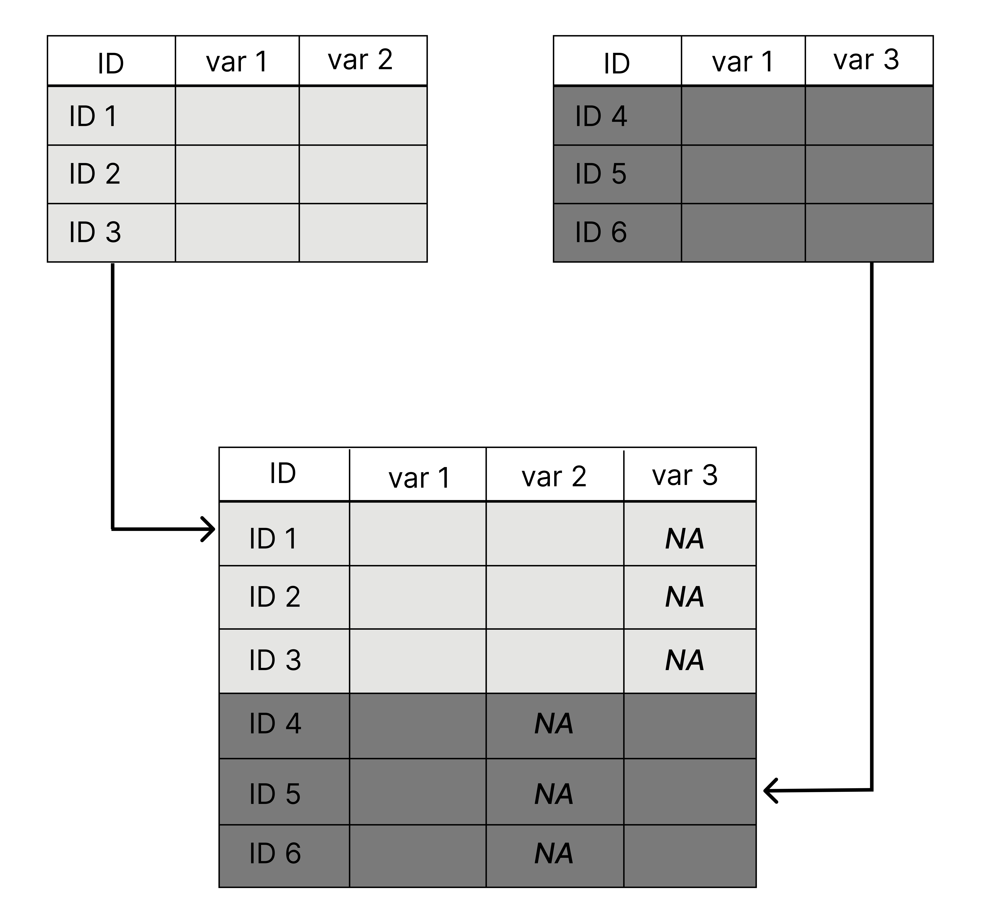

download.file(url = "https://github.com/IdahoAgStats/r-for-ag-scientists/raw/main/data/genotypic_data_rotated.csv",
destfile = here::here("data", "genotypic_data_rotated.csv"))Lesson 12: Combining Data Sets
Learning Goals
At the end of this lesson, you should:
- understand the concept of a “key” for merging
- be able to merge two data sets together
- know the difference between left join, right join, full join, semi-join and anti-join
As usual, let’s start by importing data
Another data set to import:
This will take a minute
For merging, it is done in groups of two; that is, two tables at a time are merged together.
Bind rows
If you have two data sets of different observations (the keys do not match) but similar or identical column headers, these rows can be stacked togther using a row bind.
Example syntax of a row_bind:
new1 <- bind_rows(x, y)In this functionm, the column names are matched and ordered according to the first data frame listed (“x” in this example). The default behavior is to return all unique columns from both data sets and fill in with missing data as needed.

We can manufacture a version of this with our data sets by filtering to a single trial and selecting a few columns. This is a silly toy example, but most of the time you will not be handed these data sets that are already merged. You will be given two or more data sets that need to be combined. Perhaps these are field experiments from different years or lab results from two different runs.
trial_1 <- variety_trial %>% filter(trial == "SWIdahoCereals_HRS_PAR_2016") %>% select(trial, rep, variety, yield)
trial_2 <- variety_trial %>% filter(trial == "SWIdahoCereals_SWS_PAR_2018") %>% select(trial, variety, rep, grain_protein)Compare data sets:
head(trial_1) trial rep variety yield
1 SWIdahoCereals_HRS_PAR_2016 1 LCS Iron 78.27131
2 SWIdahoCereals_HRS_PAR_2016 2 LCS Iron 124.19389
3 SWIdahoCereals_HRS_PAR_2016 3 LCS Iron 85.20458
4 SWIdahoCereals_HRS_PAR_2016 4 LCS Iron 140.56490
5 SWIdahoCereals_HRS_PAR_2016 1 10SB0087-B 94.18977
6 SWIdahoCereals_HRS_PAR_2016 2 10SB0087-B 121.59047head(trial_2) trial variety rep grain_protein
1 SWIdahoCereals_SWS_PAR_2018 Melba 1 8.4525
2 SWIdahoCereals_SWS_PAR_2018 Melba 2 7.7625
3 SWIdahoCereals_SWS_PAR_2018 Melba 3 8.5675
4 SWIdahoCereals_SWS_PAR_2018 Melba 4 10.4075
5 SWIdahoCereals_SWS_PAR_2018 14-FAC-2043 1 8.3375
6 SWIdahoCereals_SWS_PAR_2018 14-FAC-2043 2 8.2225Bind the rows together:
together <- bind_rows(trial_2, trial_1)
head(together) trial variety rep grain_protein yield
1 SWIdahoCereals_SWS_PAR_2018 Melba 1 8.4525 NA
2 SWIdahoCereals_SWS_PAR_2018 Melba 2 7.7625 NA
3 SWIdahoCereals_SWS_PAR_2018 Melba 3 8.5675 NA
4 SWIdahoCereals_SWS_PAR_2018 Melba 4 10.4075 NA
5 SWIdahoCereals_SWS_PAR_2018 14-FAC-2043 1 8.3375 NA
6 SWIdahoCereals_SWS_PAR_2018 14-FAC-2043 2 8.2225 NAIf you have ever used rbind(), this is an improvement. It will match column names across data sets and order them appropriately.
Joins
Merging two data sets when it goes beyond a row bind can take an effort.
All joins follow this syntax:
xxx_join(left_dataset, right_dataset)Where “left_dataset” and “right_dataset” correspond to the left and right data sets in this diagram:

The importance of ‘keys’
All joins rely on “keys” to match observations. A key is a unique identifier; it is usually a unique for each row. This can be a single column or the result of multiple columns. This information is used to match information in one table (or data frame) with another. The extent to which these keys match or do not match is the essence of a merge.
Let’s look at matches between “genotype”, “variety_trial”, and “metadata”.
The key between “metadata” and “variety_trial” is “trial”. There is exactly one row in the “metadata” file for each level of trial. The metadata file was designed to be like this. We did not need all those extra columns when it could be compressed into a smaller data set.
The file “genotype” is from a wholly different study. The extent of matches is considerably less complete than the matching between “variety_trial” and “metadata”.
Full join
All observations are returned, regardless if matched.
Let’s match “variety_trial” and “metadata”
ex_fulljoin <- full_join(metadata, variety_trial, by = "trial")
dim(ex_fulljoin)inner join
Returns only the rows with matching information. Non-matches are filtered out of the data set.
Let’s match “genotypes” and “variety_trial” (this will be big!).
How many of these match (where the key is “variety”, which matches “individual” in “genotype”)?
intersect(variety_trial$variety, genotypes$individual)[1] "Jefferson" "LCS Star" "UI Platinum" "UI Stone" ex_innerjoin <- inner_join(variety_trial, genotypes, by = join_by("variety" == "individual"))Check results
dim(ex_innerjoin)[1] 76 10112sort(unique(ex_innerjoin$variety))[1] "Jefferson" "LCS Star" "UI Platinum" "UI Stone" Complete this expression:
test <- inner_join(genotypes, trial_1, by = join_by( ))Left join and right join
Preserves all the rows in one data set and matches to that dataset in the other. In the left join, it is the first data set (the one on the left) where all the rows are kep. In the right join, it’s the data set to the right that is full preserved.
Let’s compare the different when merging ‘trial_2’ with ‘metadata’.
Left join
ex_leftjoin_1 <- left_join(trial_2, metadata, by = "trial")
ex_leftjoin_2 <- left_join(metadata, trial_2, by = "trial")Warning in left_join(metadata, trial_2, by = "trial"): Each row in `x` is expected to match at most 1 row in `y`.
ℹ Row 6 of `x` matches multiple rows.
ℹ If multiple matches are expected, set `multiple = "all"` to silence this
warning.right join equivalent
#ex_rightjoin_1 <- right_join(metadata, trial_2, by = "trial")
ex_rightjoin_2 <- right_join(trial_2, metadata, by = "trial")Why did this error message result?
Answer
When metadata is listed first, it is expecting on one match per key. In this case, there are many matches for the column “trial” in the object “trial_2”.
What are some relationships between these 4 joins?
Answer
- ex_leftjoin_1 is the exact equivalent of ex_rightjoin_1, but the columns are in a different order.
- ex_leftjoin_2 is the exact equivalent of ex_rightjoin_2, but the columsna are in a different order.
Semi-join
One of my favorite joins! It does an inner join, but only return the columns for the first data set listed. It’s handy when you don’t want to generate gigantic objects.
Let’s revisit matching “genotypes” and “variety_trial” like in the inner_join() example above.
ex_semijoin <- semi_join(variety_trial, genotypes, by = join_by("variety" == "individual"))How do the dimensions of this object compare to the dimensions of ‘ex_innerjoin’?
Anti-join
This is similar to semi_join(). It will return all the rows that do not match, and only the columns from the first data set mentioned.
ex_antijoin <- anti_join(variety_trial, genotypes, by = join_by("variety" == "individual"))Do any of the variety names match?
table(ex_antijoin$variety %in% genotypes$individual)
FALSE
1806 Final Notes
This is the end of lessons on data wrangling. There is additional functionality that we have not touched on that you may find useful to know.
| function name | what it does |
|---|---|
tidyr::drop_na() |
remove rows with missing data |
dplyr::pull() |
extracts a single column and converts it to a vector |
dplyr::distinct() |
return rows with distinct observations (removes duplicates) |
dplyr::na_if() |
converts a specificed value to NA |
dplyr::relocate() |
move columns to another position |
tidyr::fill() |
fill is missing data based on surrounding data |
Complete list of dplyr functions and tidyr functions.
R 4 Data Science by Hadley Wickam and Garret Grolemund provides comprehensive guide to data wrangling.
Putting it all together
Although this lesson did not demonstrate the use of the pipe, %>%, it can be used with pipes:
obj <- left_join(x, y) %>% right_join(z)The first join is a left join like any other. The second join presumes that the first argument is what was passed to it through the pipe. An equivalent:
temp <- left_join(x, y)
obj <- right_join(temp, z)